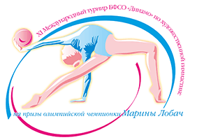

Турнир на призы Марины Лобач стал своеобразной «фабрикой звезд», взрастив целую плеяду талантливых художниц. В разное время с его ковров на пьедесталы международных первенств поднялись белоруски: Валерия Курильская, Александра Наркевич, Мелитина Станюта, Анастасия Иванькова, Анна Рябцева, Наталья Лещик, Арина Шарапа. Этот список ширится с каждым годом.
Юные спортсменки от 9 до 15 лет в трех возрастных категориях ведут борьбу за ценные призы, главные из которых: именные статуэтки Марины Лобач по традиции достаются победительницам в многоборье.